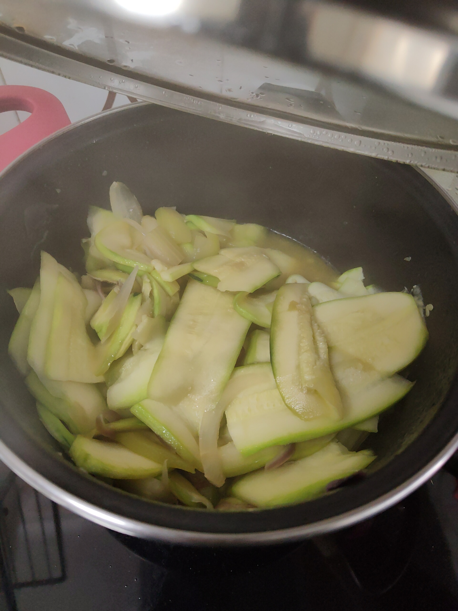
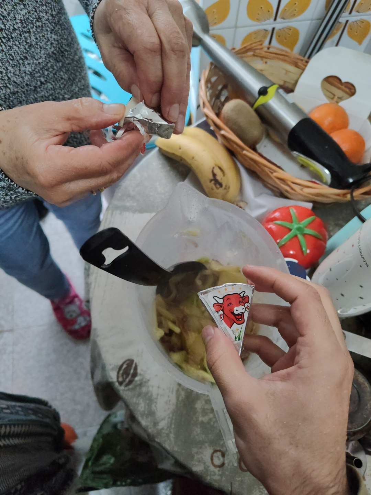
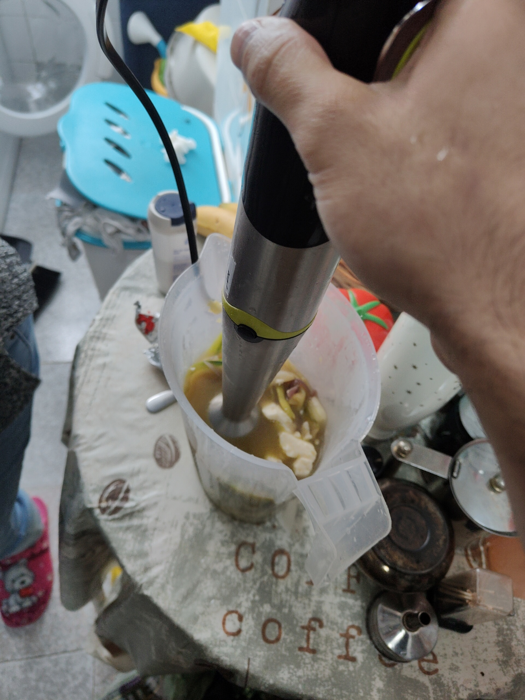

El dia anterior, lavar los frijoles y ponerlos en agua, suficiente que se tapen todos.
Al día siguiente, cocinarlos en la olla a presión con la zanahoria y las yucas. Cuando estén blanditos (maso 30 minutos mas tarde), sacar la zanahoria, las yucas y un poquito del caldito de agua en la licuadora, agregarle una cucharada de salsa de tomate, una cucharada de vinagre, una cucharada de crema de chocolo, un cubo de caldo de gallina y una cucharadita de sal, licuar todo.
Echar la mezcla a los frijoles y los chorizos picados en rodajas, mezclar, cocinar a fuego lento hasta que espesen. Cuando estén listos echar el hogao y dejar 5 minutos mezclando.
Para los chicharrones, dejarlos remojar en agua con una cucharadita de bicarbonato por 5-10 minutos y luego poner en la freidora. Empezar a cocción lenta hasta que se cocinen bien por dentro y luego subir la temperatura para que queden tostaditos.
-----------------------------------------------------------------------------------------------------------------------------
"Aguar", poner todo (menos las especias y el queso), en una olla con un poquito de aceite, y tapar para que los jugos del Calabacín suelten y se cocinen.
No dejar que se sequen del todo

Luego, en un recipiente Batir todo, junto con las especias y el queso.


Servir
-----------------------------------------------------------------------------------------------------------------------------
Mezclar todo en un bowl hasta conseguir la consistencia, ir probando y agregar mas polvo de bizcocho o sal de ser ncesario
-----------------------------------------------------------------------------------------------------------------------------
Todo va a ir en capas dentro del recipiente: Frijol y Carne, Maicitos, Crema Agria, Queso Mozzarella partido en tiritas y Pico de gallo.
Capa Frijol: Liquar frijoles refritos con mantequilla y un poquito de agua (no mucha porque sino queda aguado).
Por aparte cocinar carne molida con agua, salsa de tomate y aliños, que no quede muy seca la carne.
Montar las capas (sin el pico de gallo) en unas coquitas metálicas como de lasagne y poner al horno.
Se puede también hacer guamacole aparte.
-----------------------------------------------------------------------------------------------------------------------------
Picar y mezclar todo en un bowl. Sal y vinagre al gusto
-----------------------------------------------------------------------------------------------------------------------------